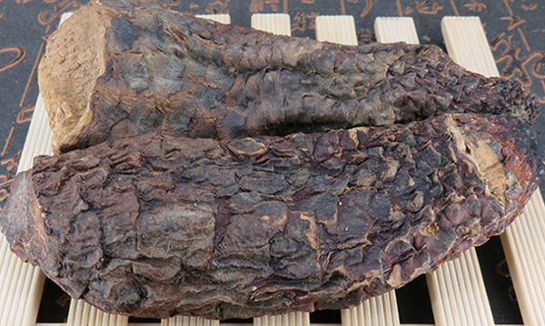
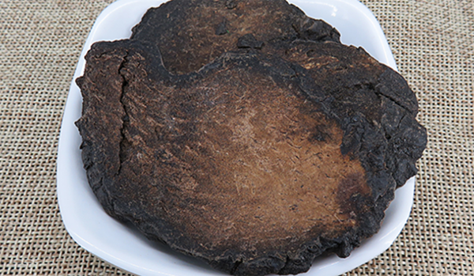

原文出处:本文转载自中药大全网。
原文连接:https://www.daquan.com/post/10910.html
原文连接:https://www.daquan.com/post/10910.html
肉苁蓉是一个生长在戈壁地的比较珍贵的药材，因为它是很好的骆驼饲料和烧火的材料，现在肉苁蓉正在逐渐消耗，属于濒危植物。肉苁蓉做药材时，在春季刚出土时采挖，炮制后使用，肉苁蓉性温，有着补肾阳，补精血的作用，同时可以润肠通便。肉苁蓉可以泡茶喝，有着补肾的功效。
肉苁蓉可以泡茶喝吗
1、补肾阳

肉苁蓉是一种十分名贵的药材，其本身就有着补肾阳的功效，人们在秋冬季时阳气渐渐消退，需要滋补阳气，补肾阳就是补全身阳气，用肉苁蓉可以泡茶喝可以补阳肾。
2、润肠通便
老年人基本上都有习惯性便秘，因为老年人阳气不足不能够很好的运化水谷，所以老年人更需要补肾阳，肉苁蓉不仅能补肾阳，更能润肠通便治疗便秘。
3、提高免疫力

肉苁蓉有补肾阳的功效，在冬季补肾阳可以提高冬天免疫力不惧怕寒冷，也有助于各种疾病的恢复。但是要注意阴虚火旺的患者不能使用。
4、治疗更年期综合征
更年期时体内激素混乱，情绪不稳定，暴躁，这是更年期综合征。现代研究表明肉苁蓉内有成分可以抑制激素，治疗跟年期综合征。
5、治疗宫寒

月经来时疼痛难以忍受，小腹冰凉的可以在平时用肉苁蓉泡水喝，肉苁蓉性温，可以起到暖宫的作用。配伍其他药物能治疗不孕。
结语：通过上文的介绍，相信大家都知道了肉苁蓉泡水喝的功效，希望朋友们在生活中能够合理的使用肉苁蓉泡水喝来养生。